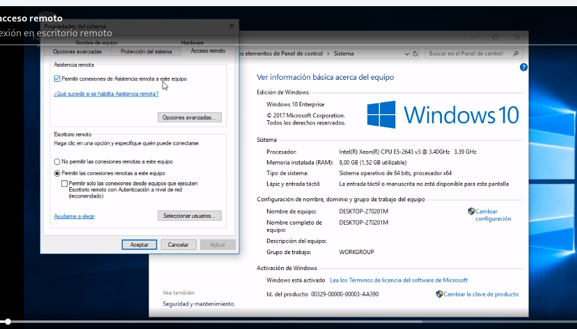

CURSO GOOGLE SOPORTE TI
1.ASPECTOS BASICOS ASISTENCIA TECNICA
-
HACER OVERCLOOKING para aumentar la frecuencia de reloj de las CPU para que vaya mas rapido en segun que tareas.
-
Conectarse por ssh a una maquina remota LINUX:
- Linux: descargamos las ssh keys, le ponemos permisos 600 y nos conectamos con ssh -i user@ip.
Windows: descargamos las prk keys, abrimos PUTTY e indicamos puerto 22 y user e IP. En la lista Category, expanda SSH. Haga clic en Auth (sin expandir). En el cuadro Private key file for authentication, busque el archivo PPK que descargó y haga clic en él. Haga clic en el botón Open.
- Linux: descargamos las ssh keys, le ponemos permisos 600 y nos conectamos con ssh -i user@ip.
-
Conectarse por ssh a una maquina remota WINDOWS:
- Windows:
- Para abrir Remote Desktop Connection, haga clic en el botón Start. En el cuadro de búsqueda, escriba Remote Desktop Connection y, luego, en la lista de resultados, haga clic en Remote Desktop Connection.
- Ingrese la dirección IP externa de la instancia a la que desea conectarse en el campo Computer. Busque la dirección IP externa de su instancia en el panel "Connection Details" a la izquierda. Haga clic en Connect.
- Cambie el nombre de usuario a student y use la contraseña que se menciona en el panel "Connection Details" a la izquierda. Haga clic en OK.
- Haga clic en Yes para aceptar el certificado.
- Linux:
- Abra Remmina.
- Escriba la dirección IP externa de la instancia a la que desea conectarse. Busque la dirección IP externa de su instancia en el panel "Connection Details" a la izquierda. Haga clic en Connect.
- Asegúrese de que el protocolo de conexión esté establecido en RDP, como se muestra en la siguiente imagen:
- Aparecerá una ventana para que acepte el certificado. Haga clic en Ok para continuar.
- Deje el campo de dominio vacío. Cambie el nombre de usuario a student y use la contraseña que se menciona en el panel "Connection Details" a la izquierda para el campo Password. Haga clic en Ok para continuar.
- Windows:
-
Para verificar programas instalados:
- Windows: en programas y caracteristicas.
- Linux: comando
dpkg -s firefox. Actualizar paquetesapt-get install -f.
2. BIT Y BITES: REDES INFORMÁTICAS.
-
ARP es un protocolo de comunicaciones de la capa de enlace de datos,1 responsable de encontrar la dirección de hardware (Ethernet MAC) que corresponde a una determinada dirección IP. Para ello se envía un paquete (ARP request) a la dirección de difusión de la red (broadcast, MAC = FF FF FF FF FF FF) que contiene la dirección IP por la que se pregunta, y se espera a que esa máquina (u otra) responda (ARP reply) con la dirección Ethernet que le corresponde. Cada máquina mantiene una caché con las direcciones traducidas para reducir el retardo y la carga. ARP permite a la dirección de Internet ser independiente de la dirección Ethernet, pero esto solo funciona si todas las máquinas lo soportan. De manera sencilla de explicar, el objetivo del protocolo ARP es permitir a un dispositivo conectado a una red LAN obtener la dirección MAC de otro dispositivo conectado a la misma red LAN cuya dirección IP es conocida.
-
ARP se utiliza en cuatro casos referentes a la comunicación entre dos hosts:
- Cuando dos hosts están en la misma red y uno quiere enviar un paquete a otro.
- Cuando dos hosts están sobre redes diferentes y deben usar un gateway o router para alcanzar otro host.
- Cuando un router necesita enviar un paquete a un host a través de otro router.
- Cuando un router necesita enviar un paquete a un host de la misma red.
-
IP PRIVADAS:
- Clase A: 10.0.0.0 a 10.255.255.255/24
- Clase B: 172.16.0.0 a 172.31.255.255/16
- Clase C: 192.168.0.0 a 192.168.255.255/16
-
PUERTOS:
- El puerto 0 no se usa para el tráfico de red, pero a veces se usa en las comunicaciones que tienen lugar entre diferentes programas en la misma computadora.
- Los puertos 1-1023 se conocen como puertos del sistema o, en ocasiones, como "puertos conocidos". Estos puertos representan los puertos oficiales de los servicios de red más conocidos. En un video anterior, hablamos sobre cómo HTTP normalmente se comunica a través del puerto 80, mientras que FTP generalmente se comunica a través del puerto 21. En la mayoría de los sistemas operativos, se necesita acceso a nivel de administrador para iniciar un programa que escucha en un puerto del sistema.
- Los puertos 1024-49151 se conocen como puertos registrados. Estos puertos se usan para muchos otros servicios de red que pueden no ser tan comunes como los que están en los puertos del sistema. Un buen ejemplo de un puerto registrado es 3306, que es el puerto que muchas bases de datos escuchan. Los puertos registrados a veces están registrados y reconocidos oficialmente por la IANA, pero no siempre. En la mayoría de los sistemas operativos, cualquier usuario de cualquier nivel de acceso puede iniciar un programa escuchando en un puerto registrado.
- Finalmente, tenemos los puertos 49152-65535. Estos son conocidos como puertos privados o efímeros. Los puertos efímeros no se pueden registrar con la IANA y generalmente se utilizan para establecer conexiones salientes. Debe recordar que todo el tráfico TCP utiliza un puerto de destino y un puerto de origen. Cuando un cliente desea comunicarse con un servidor, se le asignará un puerto efímero para que se use solo para esa conexión, mientras el servidor escucha en un sistema estático o un puerto registrado.
-
DNS Para la gestión de un dominio existen una serie de parámetros que permiten configurar el dominio para diferentes tareas llamados registros DNS. Por ejemplo, con estos parámetros permiten que un mismo dominio pueda funcionar en varios servidores, crear subdominios y que cada uno apunte a diferentes IPs o distintos alojamientos.
-
Entre los tipos de registro DNS más utilizados se encuentran los siguientes:
- A (Address), Registro de dirección. Devuelve una dirección IP. Este registro sirve para resolver nombres de alojamientos a un número IPv4, teniendo en cuenta si la IP es dinámica o fija. Por ejemplo, para apuntar nuestro nombre de dominio a un servidor.
- AAAA (Address), Registro de dirección IPv6. Los registros AAAA son muy parecidos a los A, es decir, ambos devuelven una dirección IP. En el caso de los AAAA, las IPs que se almacenan son IPv6. Este tipo de registro de DNS, al igual que A, sirve para apuntar nuestro dominio a un determinado servidor.
- CAA (Certification Authority Authorization), Autorización de la Autoridad de Certificación. Este parámetro de DNS es un mecanismo de seguridad que permite limitar las autoridades certificadoras válidas para un dominio. Es decir, indicar a qué autoridades certificadoras permitimos emitir certificados de seguridad (SSL) para el dominio.
- CNAME (Canonical Name), Registro de nombre canónico. Este registro se suele utilizar para crear alias de un nombre. CNAME es una forma de hacer que el dominio apunte a otro dominio diferente o a un subdominio. También puede usarse cuando distintos servicios están utilizando una misma IP, de forma que cada servicio tenga su propia entrada DNS.
- MX (Mail eXchange), Registro de intercambio del correo. Los registros MX apuntar al servidor de correo del dominio y es posible establecer tantos como sean necesarios. En relación con estos registros ten en cuenta que, de forma automática, se establecen prioridades. Es decir, el primer registro MX que introduzcas tendrá prioridad sobre los siguientes.
- PTR (Pointer), Registro de puntero. O registro inverso, ya que funciona de manera opuesta a A, se encarga de traducir IPs a nombres de dominio. Generalmente PTR se utiliza en el archivo de configuración de la zona DNS inversa.
- SRV (Service record), Localizador de servicios. Es un registro para servicios especiales que proporciona información relacionada con los servicios disponibles para un determinado dominio. Es habitual su uso con XMPP, LDAP o SIP.
- TXT (Text), Registro de texto. Registro para insertar el texto que desees. Suele utilizarse para verificar la autoridad del dominio o para evitar usos incorrectos de las direcciones de correo. Además, TXT permite la creación de registros especiales y Domain-Keys.
-
Están los HOSTS FILES para indicar IP+dominio para especificar o nombras hosts de la red o direcciones ejemplo 192.168.1.5 pc-miguel
-
Prueba de conectividad de puerto:
- NETCAT
nc (-zv) google.com 80
- TEST-NETCONNECTION
Test-NetConnection google.com
- NETCAT
-
Comando
PINGpara probar conexión a un host o dirección. -
TRACEROUTE o TRACERT para probar los saltos de nodos para llegar a una dirección:
traceroute google.como en windowstracert google.com -
Comando
NSLOOKUPpara ver los dns de un sitio.nslookup google.com. Sin nombre es modo interactivo. Se pueden ponerserver 8.8.8.8y cambia de dns server oset type MXpara que te diga esos registros.
3.SISTEMAS OPERATIVOS
-
Ayuda de comandos:
- Win:
Get-Help comando o comando /? - Lin:
comando --help o man comando
- Win:
-
Listar directorios:
- Win:
ls C:\ o ls -Force C:\ - Lin:
ls directorio o ls -la dir
- Win:
-
Cambiar directorios:
cd
-
Crear directorios:
mkdir dir o mkdir dir "el direcorio nuevo"
-
Historial de comandos:
history o CONTROL+R texto
-
Copiar archivos:
cp file1 dir/file1
-
Copiar directorio:
- Win:
cp dir1 /dir/dir1 -Recurse -Verbose - Lin:
cp -r dir1 /dir/dir1
- Win:
-
Mover/renombrar archivos:
mv file1 dir/filr1
-
Borrar:
- Win:
rm file o rm -Force file o rm dir1 - Recurse - Lin:
rm file o rm -f file
- Win:
-
Ver contenido:
cat file
-
Head/tail:
- Win:
cat file.txt -Head/Tail 10 - Lin:
head/tail -n5 file.txt
- Win:
-
Modificar archivos:
- Win:
start notepad++ file2.txt - Lin:
vim file1.txt
- Win:
-
Donde se encuentra el comando:
- Win:
Get-Alias ls - Lin:
whereis/which ls
- Win:
-
Buscar palabras en un texto/dir:
- Win:
Select-String palabra dir/file.txtSe ha de activar indexing options de windows para buscar palabras entre contenido de ficheros. - Win:
ls dir/ -Recurse -Filter *.exe - Lin:
grep palabra dir/*.txt
- Win:
-
Redirecionamientos(>/>>/):
- Win:
cat words.txt | Select-String st > st_words.txt - Lin:
cat words.txt | grep st > st_words.txt
- Win:
-
Ver usuarios y grupos:
- Win: ir a Computer Management > Users/groups
- Win:
Get-LocalUser // Get-LocalGroup // Get-LocalGroupMember namegroup - Linux:
cat /etc/sudoers // cat /etc/passwd // cat /etc/group
-
Cambiar contraseña usuario:
- Win:
net user miguel "contraseña" // net user miguel * // net user miguel /logonpasswordchg:yes - Lin:
passwd miguel //passwd -e miguel
- Win:
-
Añadir usuario:
- Win:
net user miguel */contraseña /add /logonpasswordchg:yes - Lin:
useradd miguel
- Win:
-
Borrar usuario:
- Win:
net user miguel /del // Remove-LocalUser miguel - Lin:
userdel miguel
- Win:
-
Ver permisos:
- Win:
icacls dir/file - Lin:
ls -l dir/file
- Win:
-
Cambiar permisos:
- Win:
icacls dir/file /grant 'Everyone:(OI)(CI)(R)' - Lin:
chmod u+x/650 dir/fileEn windows tenemos el permiso especial de Owner Propietary y en linux tenemos el SETUID(4), SETGID(2) Y STICKYBIT(1).
- Win:
-
Ejecutar paquetes software:
- Win:
/path/file.exe - Lin:
dkpg -i/-r/-l file.deb // apt-get install file.rpm
- Win:
-
Comprimir archivos:
- Win:
Compress-Archive -Path /dir/* /dir/file.zip - Lin:
tar -cvf file.tar file1 file2 file3
- Win:
-
Dependencias de paquetes:
- Win:
Register-PackageSource -Name chocolatey -ProviderName Chocolatey -Location http://chocolatey.org/api/v2 - Win:
Get-PackageSource - Win:
Find-Package sysinternals -IncluseDependencies - Win:
Install/Uninstall-Package sysinternals - Lin:
sudo apt install -fSysinternals package es un tipo de herramienta/repositorio junto a Chocolatey para poder encontrar paquetes de dependencias de otros paquetes de software.
- Win:
-
Instalar paquetes:
- Win:
Install-Package sysinternals // Get-Package paquete - Lin:
apt install paquete -y / apt remove/update/upgraderepos en /etc/apt/source.list
- Win:
-
Ver dispositivos:
- Win: device manager
- Lin: /dev
-
Actualizaciones:
- Win: windows update
- Lin:
uname -r // apt update / apt full-upgrade
-
Ver procesos:
- Win: task manager /
tasklist/Get-Process | Sort CPU -descending | Select -first 3 - Property ID,RAM,CPU - Linux:
ps / ps -ax / ps -ef / uptime / lsof / topTop para linux y process explorer para windows.
- Win: task manager /
-
Terminar procesos:
- Win:
taskkill // taskkill /F /pid 586 - Lin:
kill 586 / kill -KILL/TSTP 856
- Win:
-
Nos podemos conectar por SSH a otra maquina. Se ha de tener instalado el cliente ssh y en el otro el servidor ssh. Utilizamos herramientas en windows como putty.exe y pscp.exe y en linux via comandos:
ssh -p puerto (-x) usuario:ip_host
ssh-keygen -t rsa
scp-copy-id ruta/fichero user@ip_host:ruta
/etc/ssh.d/sshd_config -
Podemos conectarnos también a maquinas virtuales y poner un SO y utilizan recursos fisicos de nuestra maquina.
-
Podemos ver registros de seguridad, servicios, autenticación o del sistema en Event viewer de windows o en /var/log o /var/log/syslog en linux y buscar los posibles errores filtrando en su busqueda.
-
Podemos clonar discos duros o sistemas operativos con herramienta como clonezilla o Ghost y en linux con el comando DD:
dd if=/dev/sda1 of=/dev/disco_extraible/imagen.img bz=100M -
La ruta de un nuevo disco es conectarlo. Asignarla creando una particion y despues crearle un sistema de fichero para poder usar el espacio nuevo asignado.
-
Formatero en Windows: en administrador de discos o en consola diskpart->select disk1 -> clean -> create partition primary -> select partition 1 -> active -> format FS=NTFS label=my-disk quick
-
Formatero en Linux: podemos usar la herramienta parted -l o fdisk. Para formatear un sistema de ficheros se usa
mkfs -t ext4 /dev/sda2una vez que hemos creado una partición con espacio. Luego se puede montar como por ejemplo el device nuevo o un usb con la opciónmount /dev/sdb1 /opt/diry para desmontar se usaumount dir/device. Para que se haga automaticamente en el sistema al iniciarse se pone en el fstab yblkidpara ver el ui de la unidad. -
La swap es un memoria virtual de intercambio para acciones rapidas que se estan ejecutando. Para cambiarla en windows se va a panel de control -> seguridad ->sistema -> systema avanzados - > settings -> advanced y cambiarlo. En linux se asigna al principio al instalar el so o se puede crear una particion de tipo swap con `mkswap /dev/sdb1.
-
Creación de simbolyc link o hards donde en los hards se mantiene la chicha.
- Win:
mklink (/H) /path/link_name file - Lin:
ln (-s) /path/file /path/link_nameen linux se ve con ls -li los inodos y cuantos hard links tiene este archivo.
- Win:
-
Uso de disco:
- Win: en admin d discos o du
- Lin:
du -hdf -h
-
Reparación de sistemas de archivos:
- Win:
fsutil repair query C:ochkdsk /F C: - Lin:
fsck /dev/sda1
- Win:
PRACTICA PERMISOS
-
Queremos quitar el permiso de Kara de WX y solo queremos que lea R.
-
Le quitamos todos los permisos:
ICACLS C:\Users\Qwiklab\Documents\important_document /remove "Kara" -
Le ponemos todos de nuevo solo con R:
ICACLS C:\Users\Qwiklab\Documents\important_document /grant "Kara:(r)" -
Queremos que otro usuario tambien tenga permisos a esa carpeta y a kara se le sume RW.
-
Le añadimos a Phoebe permisos de lectura:
ICACLS C:\Users\Qwiklab\Secret\ /grant "Phoebe:(r)" -
Le añadimos a Kara el de escritura ya que la R ya la tiene:
ICACLS C:\Users\Qwiklab\Secret\ /grant "Kara:(w)" -
Su objetivo en este ejemplo es cambiar los permisos de esta carpeta para que el grupo "Everyone" solo tenga permiso de lectura (no de escritura).
-
Quitamos todos los permisos y luego añadimos la R:
ICACLS C:\Users\Qwiklab\Music\ /remove "Everyone" -
En este ejemplo, necesita modificar los permisos de ese archivo, de manera que el grupo llamado "Authenticated Users" tenga acceso de escritura. El grupo "Authenticated Users" contiene usuarios que se han autenticado en el dominio o en un dominio que es confiable por la computadora.
-
Añadimos ese tipo de usuarios con el permiso:
ICACLS C:\Users\Qwiklab\Documents\not_so_important_document /grant "Authenticated Users:(w)" -
En este ejemplo cambiará los permisos de otro archivo de la carpeta "Documents". El archivo llamado "public_document" tiene que estar disponible para lectura pública, de manera que todas las personas del sistema puedan leerlo.
-
La manera más sencilla de asegurarse de que todos los usuarios del sistema tengan permiso de lectura es agregar ese permiso al grupo "Everyone".
ICACLS C:\Users\Qwiklab\Documents\public_document /grant "Everyone:(r)"
CREAR PARTICIONES
-
WINDOWS: Haga clic en el botón Start y seleccione Control Panel para abrir el panel de control. Allí, navegue a System and Security y, luego, a Administrative Tools. En la ventana "Administrative Tools", haga doble clic en Computer Management. Como lo que nos interesa es administrar discos, en el panel izquierdo, debajo de Storage, seleccione Disk Management.
-
En el panel de control, verá un diálogo donde deberá ingresar el tamaño para reducir el disco. Escriba "20,480MB" para dividir el disco en dos particiones de 30 GB y 20 GB respectivamente. Haga clic en Shrink. El disco se reducirá y el espacio adicional de 20 GB se mostrará como sin asignar. En este espacio sin asignar, creará una nueva partición de 20 GB. Haga clic con el botón derecho del mouse en el espacio y seleccione New Simple Volume. En la siguiente sección del asistente, asegúrese de que la letra de la unidad sea E y haga clic en Next.
-
A continuación, formateará una partición para asignarle otro formato de archivo. El formateo de particiones es destructivo y borra todos los datos de la partición, lo que no es muy bueno. Recuerde siempre hacer una copia de seguridad de sus datos antes de modificar particiones en un sistema activo. Para formatear la partición "E:" y asignarle un formato de archivo distinto, haga clic con el botón derecho del mouse en la partición y seleccione Format. En el panel de control, verá un diálogo para formatear el sistema de archivos. En la lista desplegable de formatos de archivos, seleccione FAT32 y haga clic en OK.
-
LINUX: En Linux, puede ver los dispositivos de bloques y los sistemas de archivos adjuntados a su sistema con el comando lsblk, que recopila información acerca de todos los dispositivos que se encuentran adjuntados al sistema y los imprime con una estructura de árbol. Para ver los dispositivos que se adjuntaron a su VM, use el comando
lsblk. De manera opcional, puede ver los discos activados en el sistema con el comandodf.
student-02-9da601a39b43@linux-instance:~$ lsblk
NAME MAJ:MIN RM SIZE RO TYPE MOUNTPOINT
sda 8:0 0 10G 0 disk
└─sda1 8:1 0 10G 0 part
sdb 8:16 0 10G 0 disk
└─sdb1 8:17 0 10G 0 part /
-
Para enumerar todas las particiones que contiene /dev/sdb, pase /dev/sdb al comando fdisk
sudo fdisk -l /dev/sdb. La activación y desactivación son los procesos mediante los cuales un dispositivo está disponible o deja de estarlo en un sistema de archivos Linux. Esto se logra con los comandos mount y umount. Antes de modificar un disco, primero debe desactivarlo del sistema con el comando "umount". Cuando haya terminado de modificar el disco, debe activarlo de nuevo en el sistema. m para ver las opciones del menu ,p para ver las particiones d para borrar particion. -
Use el control de comando d para borrar la partición predeterminada. Cuando emita el control de comando d, fdisk le pedirá que ingrese la cantidad de particiones que quiera borrar. Como tiene una sola partición, la predeterminada, fdisk la seleccionará automáticamente y la borrará para continuar. Ahora podrá crear particiones nuevas. Para ello, ingrese el control de comando n. la primera cambiará al tipo de intercambio de Linux. Ingrese el control de comando t para cambiar el tipo de partición y seleccione la primera partición. Comando w para guardar cambios.
-
A continuación, creará diferentes sistemas de archivos en las particiones que acaba de generar. Para ello, usará el comando mkfs en Linux. Existen varios tipos de archivos. Es importante que los conozca a todos, junto con las funciones para las que son más adecuados. En este lab, formateará la segunda partición en "ext4", el tipo de sistema de archivos de Linux más usado
sudo mkfs -t ext4 /dev/sda2. -
Ahora, puede activar /dev/sda2 en una ubicación del sistema de archivos para comenzar a acceder a los archivos que se encuentran en él. Actívela en el directorio /home/my_drive.
sudo mount /dev/sda2 /home/my_drive
4.ADMINISTRACIÓN DE SISTEMAS Y SERVICIOS DE INFRAESTRUCTURA DE TI
-
Configurar DNS con
apt install dnsmasq.- Pruebas de
dig www.google.com @localhost - Parar servicio
sudo service dnsmasq stop - Depurar configuraciones
sudo dnsmasq -d -q - Cargar lista de host/ip
sudo dnsmasq -d -q -H myshosts.txt
- Pruebas de
-
DHCP con dhcp.conf:
sudo dnsmasq -d -q -C dhcp.confsudo dhclient -i interface -v
-
Los servicios escriben registros en
sudo tail /var/log/syslog -
Ver servicios con errores o running:
sudo systemctl --state=failed/running -
En windows podemos ir al apartado servicios y buscar el servicio para parar, reiniciar, etc.
-
Con powershell:
- Get-Service
- Get-Service wuauserv
- Get-Service wuauserv | Format-List *
- Stop-Service wuauserv
- Start-Service wuauserv
- Set-Service ScardSvr -StartupType Manual (habilitar servicios inhabilitados)
- Install-WindowsFeature Web-WebServer,Web-Mgmt-Tools -IncludeAllSubFeature (habilitar funciones adicionales). (En IIS cambiaremos la web de exemplo como si fuera index.html)
PRACTICA DNS Y DHCP
-
Caso hipotético
- En la empresa donde trabaja, se configuró dnsmasq para administrar las necesidades de - DNS y DHCP de la red.
- Actualmente, se usa casi todo el rango de DHCP para entregar IP dinámicas. Se - agregarán varios servidores a la red, que deben configurarse con direcciones IP - conocidas.
- Su tarea en este lab es modificar esa configuración de dnsmasq para que los - servidores siempre tengan las mismas direcciones IP. Para ello, deberá otorgar a los - servidores las IP necesarias y reducir el rango para las IP dinámicas.
- Configuración de red
- Debido a que sigue la regla de nunca realizar pruebas en producción, experimentará - con los cambios necesarios en una máquina que simule la red. Debe hacerlo de esta - manera, en lugar de probar los comandos en el servidor DNS real.
- En la vida real, después de terminar de experimentar, aplicaría los mismos cambios - que realizó en la etapa de prueba a la instancia de producción que ejecuta dnsmasq en - la red.
- Analicemos esta simulación de configuración de red.
- Para la instancia de pruebas, configuramos una interfaz de red virtual (llamada eth_srv) en la que escuchará el servidor DNS y DHCP. Podemos ver el estado de esa Interfaz con el comando ip. Con el siguiente comando se mostrará información sobre la configuración de la red:
-
Vemos nuestra interface:
ip address show eth_srv -
Observamos que la interfaz está configurada para tener la dirección IPv4 192.168.1.1 en una red con una máscara de red /24 o 255.255.255.0. Además, tenemos otra interfaz de red virtual que usaremos para simular a un cliente que interactúa con el servidor y solicita tráfico DNS o DHCP. Esta interfaz se denomina eth_cli. Podemos ver el estado si usamos un comando equivalente como el que se mencionó más arriba:
student-04-aafdf6c7167d@linux-instance:~$ ip address show eth_srv
4: eth_srv@eth_cli: <BROADCAST,MULTICAST,UP,LOWER_UP> mtu 1500 qdisc noqueue state UP group default qlen 1000
link/ether 92:14:77:2e:2a:24 brd ff:ff:ff:ff:ff:ff
inet 192.168.1.1/24 scope global eth_srv
valid_lft forever preferred_lft forever
inet6 fe80::9014:77ff:fe2e:2a24/64 scope link
valid_lft forever preferred_lft forever
student-04-aafdf6c7167d@linux-instance:~$ ip address show eth_cli
3: eth_cli@eth_srv: <BROADCAST,MULTICAST,UP,LOWER_UP> mtu 1500 qdisc noqueue state UP group default qlen 1000
link/ether 72:45:9a:57:5c:6e brd ff:ff:ff:ff:ff:ff
inet6 fe80::7045:9aff:fe57:5c6e/64 scope link
valid_lft forever preferred_lft forever
En este caso, podemos ver que la interfaz no tiene una dirección IPv4 (todavía).
-
Cuando se experimenta con cambios en un servicio, es recomendable habilitar la salida de depuración para poder entender qué sucede y por qué. Actualmente, dnsmasq se ejecuta como un demonio en segundo plano. Podemos consultar el estado con el comando de servicio que aprendimos en la lección anterior:
-
A fin de visualizar la salida de depuración, vamos a detener el servicio en ejecución y a iniciarlo manualmente como proceso en segundo plano. Primero debe detenerlo:
sudo service dnsmasq stop
Luego, debe iniciarlo manualmente con indicadores de depuración:sudo dnsmasq -d -qSi esos parámetros le generan curiosidad, el indicador -d significa "no demonio", es decir, el servicio se ejecuta en primer plano en lugar de en segundo plano; el indicador -q significa "registrar consultas", es decir, se mostrarán las interacciones con los clientes. Como el servicio se está ejecutando en segundo plano, no podrá ejecutar otros comandos en la terminal hasta que lo detenga manualmente con "Ctrl + C". No lo detenga ahora, ya que necesitaremos que siga activo para el paso siguiente.
-
Se puede hacer pruebas de que responde el dnsmasq en dos terminales:
sudo dnsmasq -d -qstudent-04-aafdf6c7167d@linux-instance:~$ dig example.local @localhost
-
cat /etc/dnsmasq.d/mycompany.confvemos la info de la configuración de dnsmasq:- interface es el nombre de la interfaz que se usará para escuchar las solicitudes DHCP y entregar las respuestas; lo establecemos en nuestra interfaz virtual eth_srv.
- bind-interfaces significa que dnsmasq operará solo en esa interfaz y se ignorarán las demás.
- domain es el nombre de dominio utilizado en la red.
- dhcp-option nos permite brindar a los clientes DHCP información adicional opcional. En este caso, establecemos el router (también conocido como puerta de enlace predeterminada) y el dns-server. Cuando los clientes reciban la respuesta DHCP, también recibirán y aplicarán esta configuración.
- dhcp-range indica el rango de IP que está disponible para utilizarse en la asignación dinámica de IP y la extensión del tiempo asignado. En este caso, toda la red (excepto el servidor DHCP) está disponible actualmente como parte del rango dinámico. Sabemos que debemos modificarlo. La asignación de tiempo está definida en 24 horas, lo que no es recomendable si nuestra red tiene muchos dispositivos que solo son visibles durante períodos breves.
-
Cómo experimentar con un cliente DHCP: Ahora que sabemos que el DNS funciona correctamente, vamos a experimentar con la configuración de DHCP. En la segunda terminal, ejecutaremos dhclient, que es el cliente DHCP más común en Linux. Como se mencionó, lo ejecutaremos en la interfaz eth_cli. Además, le indicaremos que se inicie en modo detallado y ejecute un script de depuración que le brindamos:
sudo dhclient -i eth_cli -v -sf /root/debug_dhcp.shLa secuencia de comandos de depuración que pasamos con el parámetro -sf es para que, en lugar de modificar toda la configuración de red en esta máquina, podamos ver qué información se recibió del servidor.
-
Podemos cambiar la info del dhcp
sudo nano /etc/dnsmasq.d/mycompany.conf:
# This is the interface on which the DHCP server will be listening to.
interface=eth_srv
# This tells this dnsmasq to only operate on that interface and not operate
# on any other interfaces, so that it doesn't interfere with other running
# dnsmasq processes.
bind-interfaces
# Domain name that will be sent to the DHCP clients
domain=mycompany.local
# Default gateway that will be sent to the DHCP clients
dhcp-option=option:router,192.168.1.1
# DNS servers to announce to the DHCP clients
dhcp-option=option:dns-server,192.168.1.1
# Dynamic range of IPs to use for DHCP and the lease time.
dhcp-range=192.168.1.20,192.168.1.254,6h
dhcp-host=aa:bb:cc:dd:ee:b2,192.168.1.2
dhcp-host=aa:bb:cc:dd:ee:c3,192.168.1.3
dhcp-host=aa:bb:cc:dd:ee:d4,192.168.1.4
comprobamos que esté bien el archivo
student-04-aafdf6c7167d@linux-instance:~$ sudo dnsmasq --test -C /etc/dnsmasq.d/mycompany.confdnsmasq: syntax check OK.
Vemos que ahora está utilizando el nuevo rango, que comienza a partir de 192.168.1.20, y que la asignación de tiempo es de 6 horas en lugar de 24 horas.
PRACTICA APACHE
-
Tenemos un caso en que la web, todo su contenido está en otra ubicación y se ha de colocar bien y con su configuración y desactivar la otra predeterminada.
-
Instalamos apache
sudo apt install apache2 -y. -
Los sitios webs donde se publican las webs se encuentran en
ls -l /etc/apache2/sites-available. -
Ejemplo de virtualhost:
<VirtualHost *:80>
ServerAdmin webmaster@localhost
DocumentRoot /var/www/html
ErrorLog ${APACHE_LOG_DIR}/error.log
CustomLog ${APACHE_LOG_DIR}/access.log combined
</VirtualHost>
Eso indica que el servicio estará escuchando en el puerto 80 para todas las IP. Luego, se detalla la dirección de correo electrónico del administrador del servicio, la ruta principal del sitio web y las rutas de los archivos de registro de errores y acceso.
-
Copiamos el contenido de la web a donde toca
sudo mv /opt/devel/ourcompany /var/www/ourcompany. -
Creamos un documento nuevo para crear nuestro propio sitio y no el predeterminado
cd /etc/apache2/sites-available. -
Copiamos y editamos el nuevo cambiando el DocumentRoot por el nuevo sitio de /var/www/ourcompany:
sudo cp 000-default.conf 001-ourcompany.conf
student-00-e3d872882ea6@linux-instance:/etc/apache2/sites-available$ sudo vim 001-ourcompany.conf
-
Ya agregamos un sitio que apunta a la ubicación adecuada, pero que todavía no está habilitado. Por el momento, sigue estando habilitado el sitio predeterminado. Apache2 nos permite tener sitios que están disponibles, aunque no necesariamente habilitados, para evitar los cambios disruptivos. Los sitios habilitados se administran en /etc/apache2/sites-enabled. Veamos el contenido de ese directorio:
ls -l /etc/apache2/sites-enabled -
Las flechas indican que este archivo es un vínculo simbólico al archivo que se encuentra en el directorio sites-available. En otras palabras, para habilitar o inhabilitar un sitio en Apache2, simplemente se crea o se quita un vínculo simbólico entre los directorios sites-available y sites-enabled.
-
Para simplificar el proceso, hay dos comandos, a2ensite y a2dissite, que administran esos symlinks por nosotros (los nombres provienen de las palabras en inglés para habilitar, ["enable"], o inhabilitar ["disable"] el sitio en Apache2). Utilicemos esos comandos para habilitar nuestro sitio nuevo e inhabilitar el predeterminado:
sudo a2ensite 001-ourcompany.conf
sudo a2dissite 000-default.conf -
Y volvamos a consultar el contenido del directorio:
ls -l /etc/apache2/sites-enabled -
Hasta que no se recarga el servicio no funcionará:
sudo service apache2 reload -
Hay modulos en apache que se encuentran en:
ls /etc/apache2/mods-available. -
Activamos uno que es para que se active el pie de pagina y no se vea una linea discontinua:
student-00-e3d872882ea6@linux-instance:/etc/apache2/sites-available$ sudo a2enmod include
Considering dependency mime for include:
Module mime already enabled
Enabling module include.
To activate the new configuration, you need to run:
service apache2 restart
student-00-e3d872882ea6@linux-instance:/etc/apache2/sites-available$ sudo service apache2 restart
student-00-e3d872882ea6@linux-instance:/etc/apache2/sites-available$ sudo vi /etc/apache2/sites-available/001-ourcompany.conf
----
añadimos despues del documentroot
<Directory /var/www/ourcompany>
Options +Includes
XBitHack on
</Directory>
------
student-00-e3d872882ea6@linux-instance:/etc/apache2/sites-available$ sudo service apache2 reload
PRACTICA NUBE
-
Crearemos instancias en la nube con Google Cloud.
-
Creamos una instancia con ciertas caracteristicas:
gcloud compute instances create linux-instance --zone=us-central1-f --machine-type=n1-standard-1 --subnet=default --tags=http-server --image=ubuntu-1604-xenial-v20190628 --image-project=ubuntu-os-cloud --boot-disk-size=10GB
gcloud compute instances create windows-instance --zone=us-central1-f --machine-type=n1-standard-1 --subnet=default --image=windows-server-2016-dc-v20190709 --image-project=windows-cloud --boot-disk-size=50GB -
Creamos un firewall: Las reglas de firewall le permiten seleccionar si desea o no que se permita cierto tráfico entrante. Es posible que desee habilitar muchos más puertos, lo que se puede hacer después de crear la instancia. Los puertos que se muestran en la página de creación de la VM son los más comunes. En esta instancia, agregue una regla de firewall para permitir el tráfico HTTP:
gcloud compute firewall-rules create default-allow-http --direction=INGRESS --priority=1000 --network=default --action=ALLOW --rules=tcp:80 --source-ranges=0.0.0.0/0 --target-tags=http-server -
Listamos instancias con
gcloud compute instances list:
student-04-a602c997bb07@master-instance:~$ gcloud compute instances list
NAME ZONE MACHINE_TYPE PREEMPTIBLE INTERNAL_IP EXTERNAL_IP STATUS
linux-instance us-central1-f n1-standard-1 10.128.0.3 34.71.55.155 RUNNING
master-instance us-central1-f n1-standard-1 10.128.0.2 34.66.56.246 RUNNING
windows-instance us-central1-f n1-standard-1 10.128.0.4 34.72.123.73 RUNNING
-
Para conectarse a una instancia se usa:
gcloud compute ssh linux-instance --zone us-central1-f -
Actualizamos paquetes con
sudo apt updatee instalamos nginxsudo apt install nginx. Comprobamos yendo a la ip externa en el navegador. -
Ahora creamos un disco adicional de 500gb para luego usarlo a la instancia de windows:
gcloud compute disks create additional-disk --type=pd-standard --size=500GB --zone=us-central1-f -
La unimos a la instancia:
gcloud compute instances attach-disk windows-instance --disk additional-disk -
El disco que se vinculó está en blanco; ni siquiera tiene un sistema de archivos. Para poder usarlo, primero tenemos que formatearlo. Este proceso se explica en detalle en el lab sobre cómo particionar y formatear una unidad de disco en Windows. Aquí lo explicaremos brevemente.
-
Ingrese el siguiente comando para crear un usuario nuevo, acceder a la windows-instance y restablecer su contraseña.
gcloud compute reset-windows-password windows-instance --user=student --zone=us-central1-f
ip_address: 34.72.123.73
password: b3JBcc[>@}Pu{$a
username: student
-
Ahora podemos conectarnos remotamente con remina o windows y veremos las caracteristicas.
-
Después de acceder, haga clic en el ícono de Windows. Luego, busque la aplicación de Computer Management (en Windows Administrative Tools), que se usa para particionar discos. Sugerencia: Puede evitar pasar por el Control Panel y tener que hacer clic en los diferentes subelementos. Para ello, escriba "Computer" en el menú de Windows. En el menú Storage hay una entrada de Disk Management que se puede usar para administrar discos.
-
Cuando hace clic en esa entrada, aparece una ventana emergente que le indica que formatee el disco nuevo. Seleccione GPT como el tipo de tabla particionada. Luego, tendrá un volumen disponible, pero no se formateará con ningún sistema de archivos específico. Para formatearlo, haga clic con el botón derecho en el volumen, seleccione "New Simple Volume" y siga las instrucciones del asistente para formatearlo usando el sistema de archivos NTFS.
-
El sistema operativo formateará el disco y lo dejará listo para usar.
PRACTICA ACTIVE DIRECTORY
-
Active Directory es una herramienta central para los administradores de sistemas que necesitan administrar máquinas Windows. Active Directory permite administrar usuarios, grupos, máquinas y las políticas que se aplican a todos ellos de manera centralizada.
-
En esta práctica de lab, interactuarás con Active Directory; lo usarás para agregar usuarios y grupos; editarás la membresía de los usuarios, y también crearás un nuevo objeto de directiva de grupo (GPO).
-
Primero instalamos active directory por comando powershell:
C:\Qwiklabs\ADSetup\active_directory_install.ps1 -
Configuramos con este comando:
C:\Qwiklabs\ADSetup\configure_active_directory.ps1 -
Abra el Active Directory Administrative Center (ADAC). Para encontrarlo, escriba active en el menú de inicio de Windows.
-
El Active Directory Administrative Center le permite administrar su instalación de Active Directory mediante la configuración de usuarios, grupos, computadoras, etc. Siéntase libre de navegar por los recursos ya existentes en el directorio.
-
Para este lab, crearemos un usuario nuevo llamado Alex. Primero, haga clic en la entrada example (local), que corresponde al dominio que puede administrar con su cuenta. Luego, desplácese hacia abajo y haga doble clic en la entrada Users para ver la lista de usuarios y grupos que existen actualmente.
-
Para crear un nuevo usuario, observe la lista de tareas en la parte derecha. En la sección Users, hay una opción New para las entradas que abre un menú secundario donde puede elegir el tipo de entidad que quiere crear. Como en este caso vamos a crear un usuario nuevo, haga clic en User.
-
Si hace clic en la cuenta que se creó, verá que, donde aparece el nombre del usuario, el sistema muestra Alex (Disabled).
-
El sistema no habilitará una cuenta que no tenga una contraseña segura. En este caso, la contraseña está vacía porque no la establecimos. Obviamente, una contraseña vacía no es segura.
-
Para establecer una contraseña, use la opción Reset password del menú. Al tener seleccionada la opción User must change password at next logon, nos aseguramos de que el usuario cambiará la contraseña cuando acceda. El objetivo de este paso es que el administrador del sistema no sepa la contraseña nueva del usuario después del primer acceso.
-
Cuando haya establecido una contraseña segura, vuelva a intentar habilitar la cuenta. Esta vez debería funcionar.
-
Ahora agreguemos un nuevo grupo. Si explora los grupos existentes, verá que hay uno llamado "Developers" y otro llamado "Java Developers". Vamos a agregar un grupo adicional llamado "Python Developers". Agregue el nuevo grupo a "Developers" y, luego, agregue la cuenta que acabamos de crear para Alex al grupo "Python Developers".
-
Para crear un nuevo grupo, use el mismo menú que usó cuando creó un usuario nuevo, pero esta vez seleccione la opción New > Group.
-
Estamos creando un grupo llamado "Python Developers"; ese es el único dato obligatorio. Si lo desea, puede agregar información adicional en Description y Notes. Cuando termine, haga clic en OK para crear el grupo.
-
Cómo agregar entidades a grupos: Ya tenemos un grupo llamado "Python Developers", y ahora queremos agregarlo al grupo "Developers" existente. Para hacerlo, nos desplazamos hacia abajo hasta la entrada nueva, hacemos clic con el botón derecho en la entrada de la lista y seleccionamos Add to another group.
-
Cuando haga clic en el botón OK, se agregará el grupo "Python Developers" a "Developers". Ahora, también agregaremos a Alex a "Python Developers", pero seguiremos un camino diferente. En este caso, haremos doble clic en la entrada "Python Developers" de la lista, lo que abrirá una ventana de edición para el grupo.
-
Como en este caso agregaremos a Alex al grupo, haga clic en el botón Add, escriba "Alex" en el campo de texto, seleccione OK para agregarlo y, luego, OK para guardar los cambios. Así agregamos correctamente un nuevo miembro al grupo: Alex.
-
Por último, hay usuario existente, llamado Alosha, que pasó de desarrollar en Java a desarrollar en Python. Vamos a quitarlo del grupo "Java Developers" para agregarlo al grupo "Python Developers".
-
Para ello, busque al usuario Alosha en la lista y haga doble clic en la entrada. Se abrirán las propiedades del usuario, que podrá editar. Hay muchas opciones de configuración para cada usuario; haga clic en la sección de la izquierda llamada Member Of.
-
Observamos que Alosha es miembro de los grupos "Domain Users" (todos los usuarios del dominio son miembros de este grupo) y "Java Developers". Seleccione la entrada "Java Developers" y haga clic en el botón Remove para quitarlo de ese grupo. Luego haga clic en Add para agregar una nueva membresía.
-
Para administrar las políticas de grupo, necesitamos usar la aplicación de Group Policy Management. Para encontrarla, escriba group en el menú de inicio de Windows.
-
Esta aplicación le permite establecer políticas que administrarán el comportamiento de las máquinas en su dominio. Puede aplicarlas a todo el dominio o a Organizational Units (OU) independientes.
-
En nuestro caso, agregaremos una política nueva a la OU de Developers que ya existe en el dominio. Para hacerlo, expanda el árbol hasta llegar al árbol de dominio de example.com y localice la OU de Developers dentro de él.
-
Para crear una política nueva y vincularla, haga clic con el botón derecho en la entrada y seleccione la primera opción del menú: Create a GPO in this domain, and Link it here.
-
Queremos establecer un fondo de pantalla predeterminado para las máquinas de la OU de Developers, por lo que nuestra política se llamará New Wallpaper. Cuando la hayamos creado, editaremos la política haciendo clic con el botón derecho en la entrada y seleccionando la primera entrada del menú: Edit.
-
Se abrirá una nueva aplicación: Group Policy Management Editor, que le permitirá explorar y configurar todas las opciones que se pueden establecer en una política de grupo. Como queremos establecer el fondo de pantalla, navegaremos hasta esta opción desde User Configuration > Policies > Administrative Templates > Desktop > Desktop.
-
Se abrirá una lista de opciones que podemos configurar, incluida "Desktop Wallpaper". Para establecer un valor específico de fondo de pantalla, haga doble clic en la entrada Desktop Wallpaper. La ventana que se abre le permite establecer el valor del fondo de pantalla. Para hacerlo, primero haga clic en el botón Enabled y, luego, ingrese una ruta de acceso para el fondo de pantalla. Puede ser una ruta local en la máquina o la ruta de una red en un servidor que comparte archivos.
-
Para este lab, ingresará C:\Qwiklabs\wallpaper.jpg en la sección Wallpaper Name.Cuando haga clic en OK, se creará la política de grupo con los valores que deseamos. Para verificarlo, regrese a la aplicación de Group Policy Management y haga clic en la pestaña Settings de la política nueva.
-
Al hacer clic en los vínculos show en la página web, puede observar que se definió la política y que la única opción modificada corresponde a Desktop Wallpaper, que tiene el valor que establecimos anteriormente.
PRACTICA BACKUPPC
-
La gestión de copias de seguridad es una actividad de importancia crítica con la que tendrás que lidiar como administrador del sistema. Cuando hablamos de administrar copias de seguridad, nos referimos no solo a la configuración inicial de cierto software de copia de seguridad, sino también a garantizar que las copias de seguridad funcionen correctamente y puedan restaurarse de manera confiable.
-
En este lab, usaremos varios comandos de Linux, que ya se explicaron en este curso y en el anterior. A continuación, repasaremos sus funciones:
- sudo
: Ejecuta un comando con derechos de administrador. - apt update: Actualiza la lista de paquetes disponibles para instalar.
- apt install package: Instala el paquete en el sistema.
- a2enmod
: Habilita un módulo de Apache2. - a2ensite
: Habilita un sitio web de Apache2. - nano
: Abre un editor de texto para editar el archivo. - service
restart: Reinicia el servicio indicado. - ls
: Muestra la lista de los archivos que se encuentran en un directorio. - cp
: Crea una copia del archivo antiguo con el nombre nuevo. - cat
: Muestra todo el contenido de un archivo. - grep
: Filtra el texto de un archivo según el patrón. - tail
: Muestra las últimas líneas de un archivo.
- sudo
-
Administrar las copias de seguridad es una actividad muy importante que deberá llevar a cabo como administrador del sistema. Además de comprender la configuración inicial de cierto software para hacer copias de seguridad, la administración de las copias de seguridad implica garantizar que estas funcionen correctamente y puedan restablecerse de manera confiable.
-
En este lab, instalará y configurará la infraestructura para realizar copias de seguridad de modo que máquinas locales y remotas administren las copias. También comprobará que las copias de seguridad puedan restablecerse de manera correcta.
-
En este lab, usaremos BackupPc. Esta solución le permite realizar copias de seguridad de los datos en distintos sistemas operativos y posee una interfaz web práctica para la configuración.
-
En este lab, configuraremos una máquina llamada backup-server como servidor. El servidor usará BackupPc para realizar copias de seguridad de otras máquinas. Veremos cómo realizar copias de seguridad de datos de la máquina local y de máquinas remotas de Linux y Windows, llamadas linux-instance y windows-instance, respectivamente.
-
Respecto del servidor de copia de seguridad, es importante realizar una copia de seguridad del directorio /etc donde se almacenan las configuraciones. En cuanto a las máquinas remotas, hay que realizar la copia de seguridad de los directorios /home y Users, donde se almacenan los datos de los usuarios.
-
Primero nos conectamos al backup-server e instalamos la herramienta backupPc:
sudo apt install backuppc -
Cuando se le pregunte cómo configurar el correo electrónico, responda Local only. Cuando haya confirmado el resto de las respuestas, el paquete terminará de instalarse. Si analiza el resultado, verá que indica que es necesario reiniciar Apache2 (y se recomienda usar systemctl restart apache2, comando equivalente al que estuvimos usando). Haremos eso en un minuto, pero antes configuraremos Apache2 y BackupPc para que usen SSL.
-
Como mencionamos antes, para encriptar conexiones, usamos HTTPS en lugar de HTTP. Vamos a usar el sitio web que proporciona BackupPc para administrar nuestras copias de seguridad. El sitio web debe estar encriptado para evitar que la contraseña administrativa y cualquier otro dato que se ingrese se transmitan en texto sin formato. De lo contrario, toda persona que espíe nuestra conexión a Internet podrá leer la contraseña de administrador y cualquier otro dato que enviemos.
-
Para habilitar HTTPS en nuestro sitio web, es necesario realizar tres pasos:
- Para habilitar el módulo SSL, usaremos el comando a2enmod:
sudo a2enmod ssl - Para habilitar el sitio SSL predeterminado, usaremos el comando a2ensite.:
sudo a2ensite default-ssl.conf - Cómo habilitar SSL en BackupPc y configurar la contraseña de administrador
sudo vi /etc/backuppc/apache.conf.En este archivo se incluyen todas las configuraciones necesarias para que BackupPc tenga un sitio web que funcione en Apache2. Si desea obtener más información sobre las opciones establecidas, puede buscarlas en la documentación de Apache2.
Quitaremos el carácter # que está antes de la opción SSLRequireSSL. Eso significa que habilitamos la opción. - El único paso que falta es establecer la contraseña administrativa del usuario backuppc. Podemos hacerlo con el comando htpasswd, que se usa para establecer contraseñas para usuarios web:
sudo htpasswd /etc/backuppc/htpasswd backuppc
- Para habilitar el módulo SSL, usaremos el comando a2enmod:
-
Reiniciamos el server apache para aplicar cambios
sudo service apache2 restart -
Ahora puede acceder a su sitio web. Para ello, copie la dirección IP externa de backup-server y péguela en una ventana nueva del navegador. https://34.133.119.159/backuppc
el navegador le pedirá su nombre de usuario y contraseña. El nombre de usuario es backuppc y la contraseña es la que ingresó con el comando htpasswd.
-
Primero, crearemos una copia de seguridad de los archivos almacenados en la máquina local. Para ello, haga clic en el vínculo Host Summary. En la página de resumen del host, se enumeran todos los hosts conocidos en el momento de la consulta y su estado. Por ahora, el único host conocido para el sistema de copias de seguridad es localhost. Aparecerá bajo Hosts with no Backups porque todavía no tiene copias de seguridad. Si hace clic en el vínculo localhost, se abrirá la página con la información de copias de seguridad correspondiente a la máquina local.
-
Esta página indica que no se realizó ninguna copia de seguridad de la máquina todavía. Para cambiar eso, haga clic en el botón Start Full Backup.
-
El mensaje en la parte superior de la página señala que la copia de seguridad falló y que se produjeron errores. En la sección de resumen, vemos que hubo un intento de realizar una copia de seguridad, pero dice que fue "parcial", lo que indica que no se pudo completar la copia de seguridad. Para analizar los errores, haga clic en el vínculo Errors en la línea "Backup 0".
Hay muchos errores, pero el mensaje dice siempre lo mismo: Permission denied. La causa de ese error es que la copia de seguridad se está ejecutando con el usuario backuppc, y ese usuario no tiene permiso para ver muchos de los archivos y directorios correspondientes al directorio /etc.
-
Analicemos cómo se realiza la copia de seguridad de esos archivos. Haga clic en el vínculo Edit Config de la sección localhost en el lado izquierdo. Luego, haga clic en la pestaña Xfer (abreviatura de transferencia).
-
Para solucionar el problema de permisos que surgió, le ordenaremos a backuppc que use el comando sudo para la creación de la copia de seguridad. Para ello, en la opción TarClientCmd, agregue sudo antes de $tarPath. De esa forma, el comando tar podrá acceder a todos los archivos a los que accede root. Damos a SAVE.
-
Esta vez debería haberse mostrado el error sudo: no tty present and no askpass program specified. La causa es que indicamos que se usaría el comando sudo, pero el usuario backuppc todavía no tiene permiso para usarlo
sudo visudo(backuppc ALL=(ALL:ALL) NOPASSWD: /bin/tar)De esa forma, el usuario backuppc debería poder acceder a todos los archivos cuando cree la copia de seguridad. Vuelva a la página principal de localhost y haga clic en el botón Start Full Backup de nuevo. Confirme y luego regrese a la página principal.
-
Puede ver el contenido de cualquier copia de seguridad generada haciendo clic en el vínculo de la entrada de la copia de seguridad (en este caso, 0). También puede ir directamente a la última copia de seguridad haciendo clic en Browse backups en el menú superior izquierdo.
-
Para examinar el contenido de una copia de seguridad, puede descargar directamente cualquiera de los archivos de la lista haciendo clic en el nombre. Por ejemplo, puede hacer clic en apache.conf y aparecerá un mensaje para que descargue el archivo en su máquina. Luego, podrá abrirlo y verificar que tenga el mismo contenido que vimos antes.
-
Si necesita restablecer algo de una copia de seguridad, debe seleccionar los elementos haciendo clic en la casilla de verificación ubicada a la izquierda del nombre y, luego, hacer clic en el botón Restore selected files. Esto le permitirá seleccionar cómo restablecer los archivos, ya sea directamente en la unidad o bien descargando un archivo Zip o Tar que los contenga.
-
Cómo hacer una copia de seguridad de una máquina de Linux remota: Para permitir que nuestro servidor se conecte a la instancia de Linux de la que queremos hacer una copia de seguridad, crearemos un par de claves SSH que se almacenará en las máquinas.
sudo su - backuppcyssh-keygenVeamos el contenido del directorio en el que se generaron las claves.
sudo ls -l /var/lib/backuppc/.ssh/ -
Para ello, copie el archivo a /tmp de modo que pueda accederse sin derechos de administrador:
sudo cp /var/lib/backuppc/.ssh/id_rsa.pub /tmp/ -
Luego, cópielo a linux-instance con el siguiente comando:
gcloud compute scp /tmp/id_rsa.pub root@linux-instance:~ --zone=us-central1-a -
Vemos que se ha copiado en la otra maquina
sudo find / -type f -name "id_rsa.pub" -
Lo copiamos al user de nuestra maquina:
sudo mv /home/sa_109733481048430167514/id_rsa.pub /home/student-03-104cdaa5152a -
Lo movemos a authorized keys para que accesa sin credenciales
cat id_rsa.pub | sudo tee -a /root/.ssh/authorized_keys -
Ahora desde el server nos conectamos a la instancia linux
sudo su - backuppcyssh root@linux-instance -
Cómo agregar la máquina remota en BackupPc: Ahora que funciona la conexión remota entre máquinas, puede configurar este cliente nuevo en BackupPc. Vuelva a la interfaz web administrativa y haga clic en Edit Hosts.
-
Agregaremos linux-instance como host nuevo. Para hacerlo, haga clic en el botón Add a fin de agregar una línea nueva y escriba linux-instance en el campo host. Luego, haga clic en el botón Save.
-
Así agregamos el host, pero falta configurarlo. Para ello, haga clic en Host summary, que ahora muestra los dos hosts conocidos por el sistema (uno con copias de seguridad y el otro sin ellas), y luego en linux-instance para ir a la página de configuración de esta instancia. La parte superior de la barra izquierda ahora se refiere a este host que queremos configurar. Para ello, haga clic en Edit Config y luego en la pestaña Xfer.
-
Para esta instancia, seleccione rsync como XferMethod. rsync es una herramienta que se puede usar para sincronizar el contenido de dos árboles de directorios sin transferir todo el contenido, ya que verifica lo que ya se transfirió y solo transfiere lo nuevo. En la ruta de la copia de seguridad (llamada RsyncShareName en la configuración rsync), escriba /home. Este es el directorio remoto que queremos resguardar. También se puede realizar una copia de seguridad de toda la máquina ingresando /. Sin embargo, en nuestro escenario, solo nos interesa /home, que contiene los directorios principales de los usuarios. Después de ingresar el directorio, haga clic en el botón Save para guardar los cambios. Luego, vaya al vínculo de la página principal de linux-instance, que muestra el estado actual de las copias de seguridad de esta máquina. En este caso, todavía no hay copias. Haga clic en el botón Start Full Backup para forzar el inicio de una copia de seguridad nueva de esta máquina. Después de confirmar la realización de la copia, vuelva a la página principal.
-
Si borramos de la instancia linux el .pub vamos a la copia y restore el fichero este y lo volvemos a tener.
-
Ahora nos conectamos a windows: Por último, también queremos usar el servidor de copias de seguridad para resguardar los datos remotos de una máquina de Windows. En este caso, el recurso del que queremos hacer una copia de seguridad es el contenido de la carpeta Users. Para eso, debemos crear un usuario backuppc que pueda conectarse a la carpeta Users como recurso compartido. Primero, nos conectaremos a windows-instance.
-
Creamos un usuario: Para crear la cuenta nueva, debemos abrir la aplicación User Accounts. Abra Control Panel, haga clic en User Accounts y luego otra vez en User Accounts. Haga clic en Manage another account para crear una cuenta nueva.
-
Una vez que creamos el usuario, debemos compartir la carpeta de la que queremos crear una copia de seguridad. En este escenario, queremos resguardar la carpeta Users. Para compartirla, abra File Explorer, navegue a la carpeta C:\Users, haga clic con el botón derecho en ella y luego haga clic en Share with > Advanced sharing y compartimos Users.
-
Vuelva a la interfaz web administrativa de BackupPc para configurar el host. Al igual que antes, primero debe hacer clic en Edit Hosts, agregar una entrada para windows-instance y guardar los cambios. Después, haga clic en Host Summary y luego en windows-instance. Desde la página principal, haga clic en Edit Config para editar la configuración y seleccione la pestaña Xfer.
-
En este caso, vamos a usar smb como XferMethod. También se conoce como samba y es el nombre del protocolo que se usa para interactuar con las carpetas compartidas de Windows. Debemos configurar SmbShareName para que sea la carpeta de la que queremos hacer una copia de seguridad (Users) y SmbShareUserName y SmbSharePassword para que sean el nombre de usuario y la contraseña que creamos en la instancia de Windows.
-
Haremos un backupp pero dara error. cambiamos en la instancia windows el tipo de cuenta creado por admin y al hacerlo de nuevo, irá bien.
-
¡Muy bien! Logró configurar un servidor de copias de seguridad, realizar copias de seguridad incrementales y completas, solucionar errores relacionados con permisos, verificar que las copias de seguridad funcionan bien descargando los archivos y restableciéndolos, y configurar un servidor para que realice copias de seguridad de archivos de configuración almacenados localmente y de directorios de usuarios ubicados en máquinas remotas de Linux y Windows. En el proceso, también aprendió a administrar la configuración sudo, intercambiar claves SSH, conectarse con carpetas compartidas en máquinas Windows y mucho más.
5.SEGURIDAD INFORMÁTICA
-
OPENVPN opción segura para conexiones entre redes.
-
REGLAS FIREWALL, mejores prácticas para crear reglas de firewall iptables.
-
El modo promiscuo es aquel en el que una computadora conectada a una red compartida, tanto la basada en cable de cobre como la basada en tecnología inalámbrica, captura todo el tráfico que circula por ella. Este modo está muy relacionado con los sniffers que se basan en este modo para realizar su tarea.
netstat -i
ifconfig eth0 promisc
or
ip link set eth0 promisc on
-
Softwares para la red de Sistema de prevención / detección de intrusiones:
-
Herramientas de filtrado de la red:
- Wireshark
- TCPDUMP
-
Rsyslog es una aplicación que se encarga de implementar un protocolo de syslog básico de captura, procesamiento y registro de los mensajes. La implementación de Rsyslog tiene como objetivo principal mejorar la gestión y el control de toda la información de la red. Permite la detección de caídas de red, la anticipación a posibles problemas futuros y prevenir fugas de información, es decir comportamientos inadecuados que causen errores en la red.
-
Además, Wispcontrol permite la configuración de alertas de log personalizadas. Así, en caso de caída o fallo del sistema, usted podrá saber qué está ocurriendo en su red inmediatamente, pudiendo obtener información sobre las amenazas potenciales.
-
dm-crypt cifrado de discos duros.
-
OPENVAS herramienta para escaneo de vulnerabilidades.
Crear o inspeccionar pares de claves, encriptar o desencriptar, y firmar o verificar con OpenSSL
-
Recuerde que un par de claves consiste en una clave pública que puede poner a disposición de todos y una clave privada que debe mantener en secreto. Cuando alguien quiera enviarle datos y asegurarse de que nadie más pueda verlos, puede usar su clave pública para encriptarlos. Los datos encriptados con su clave pública solo se pueden desencriptar con su clave privada, de modo que solo usted pueda ver los datos originales. Por eso, es importante que nadie más conozca sus claves privadas. Si alguien más tiene una copia de su clave privada, podrá desencriptar los datos que estaban destinados a usted, lo que no es muy bueno.
-
Primero, generaremos una clave privada RSA de 2,048 bits y la analizaremos. Para generar la clave, ingrese el siguiente comando en la terminal:
openssl genrsa -out private_key.pem 2048 -
A continuación, generaremos la clave pública a partir de la clave privada y también la inspeccionaremos. Ahora que tiene una clave privada, debe generar una clave pública para completar el par. Puede proporcionársela a cualquier persona que quiera enviarle datos encriptados. Cuando se encriptan los datos con su clave pública, nadie puede desencriptarlos, a menos que tenga su clave privada. Para crear una clave pública basada en una clave privada, ingrese el comando a continuación. Debería ver el siguiente resultado:
openssl rsa -in private_key.pem -outform PEM -pubout -out public_key.pem -
Creará un archivo de texto con información que desea encriptar para protegerla. A continuación, la encriptará y la inspeccionará. Para crear el archivo, ingrese el siguiente comando. Se creará un archivo de texto nuevo llamado "secret.txt" que solo incluye el siguiente texto: "This is a secret message, for authorized parties only" (Este es un mensaje secreto, solo para los usuarios autorizados). Puede cambiar este mensaje por el que desee.
echo 'This is a secret message, for authorized parties only' > secret.txt -
A continuación, ingrese el siguiente comando para encriptar el archivo con su clave pública:
openssl rsautl -encrypt -pubin -inkey public_key.pem -in secret.txt -out secret.enc -
Para desencriptar, se necesita que se tenga la llave privada, en este caso nosotros:
openssl rsautl -decrypt -inkey private_key.pem -in secret.enc -
Ahora, creará un resumen de hash del mensaje y, luego, una firma digital de este resumen. Una vez que haya terminado, verificará la firma del resumen. De esta manera, podrá asegurarse de que el mensaje no se haya modificado ni falsificado. Si se modificó el mensaje, el hash será diferente del firmado, y la verificación no se completará correctamente.
-
Para crear un resumen de hash del mensaje, ingrese el siguiente comando:
openssl dgst -sha256 -sign private_key.pem -out secret.txt.sha256 secret.txtSe creará un archivo llamado "secret.txt.sha256" con su clave privada, que incluye el resumen de hash de su archivo de texto secreto.
-
Con este archivo, cualquiera puede usar su clave pública y el resumen de hash para verificar que el archivo no se haya modificado desde que lo creó y encriptó. Para realizar esta verificación, ingrese el siguiente comando:
openssl dgst -sha256 -verify public_key.pem -signature secret.txt.sha256 secret.txtSe mostrará el siguiente resultado, que indica que la verificación se realizó correctamente y que ningún tercero malicioso modificó el archivo.
Cómo usar hashes
-
En este lab, practicará cómo usar y verificar hashes con las herramientas "md5sum" y "shasum".
-
md5sum es un programa de hashing que calcula y verifica hashes de MD5 de 128 bits. Al igual que con todos los algoritmos de hashing, en teoría, hay un número ilimitado de archivos que tendrá un hash de MD5 determinado. Puede usar "md5sum" para verificar la integridad de los archivos.
-
Del mismo modo, shasum es un programa de encriptación que calcula y verifica hashes de SHA. También se usa para verificar la integridad de los archivos.
-
Este comando crea un archivo de texto llamado "file.txt" que tiene una sola línea de texto básico:
echo 'This is some text in a file, just so we have some data' > file.txt -
Ahora, generará la suma MD5 del archivo y la almacenará. Para generar la suma de su archivo nuevo, ingrese el siguiente comando "md5sum":
md5sum file.txt > file.txt.md5 -
Sin embargo, lo más significativo es que también puede verificar que el hash sea correcto y que el archivo original no haya sido manipulado desde que se creó la suma. Para ello, escriba el siguiente comando y observe el resultado mostrado a continuación, que indica que el hash es válido:
md5sum -c file.txt.md5 -
SHA1 y SHA256 brindan más seguridad que MD5; y SHA256 es más seguro que SHA1. Esto significa que es más fácil que un tercero malicioso ataque un sistema con MD5 que con SHA1. Además, debido a que SHA256 es el hash más seguro de los tres, es el que más se usa actualmente.
shasum file.txt > file.txt.sha1 -
A continuación, use el siguiente comando para verificar el hash. (Al igual que antes, este proceso fallará si se modificó el archivo original).
shasum -c file.txt.sha1 -
Puede usar la misma herramienta para crear una suma SHA256. El marcador "-a" especifica el algoritmo que se desea usar y, si no especifica ningún valor, se seleccionará SHA1 como valor predeterminado. Para generar la suma SHA256, use el siguiente comando:
shasum -a 256 file.txt > file.txt.sha256La seguridad adicional de SHA256 se debe a que crea un hash más largo y difícil de adivinar. Se puede observar que el contenido de este archivo es mucho más largo que el del archivo de SHA1.
-
Por último, para verificar la suma SHA256, puede usar el mismo comando que antes:
shasum -c file.txt.sha256
Práctica TCPDUMP
-
En este lab, presentaremos "tcpdump" y algunas de sus funciones. "tcpdump" es la herramienta de análisis de red más importante para los profesionales de redes y seguridad de la información. Como especialista en asistencia de TI, es fundamental que conozca bien esta aplicación si desea entender TCP/IP. "tcpdump" lo ayudará a mostrar el tráfico de red de una manera más fácil para analizar y solucionar problemas.
-
Para comenzar, ingresaremos "tcpdump" y lo ejecutaremos sin ninguna opción. Tenga en cuenta que, como tcpdump requiere privilegios de administrador para capturar el tráfico, todos los comandos deben comenzar con sudo. Como mínimo, debe especificar una interfaz en la que buscar con la marca -i. Recomendamos usar ip link para verificar el nombre de la interfaz de red principal. En este caso, usaremos la interfaz eth0 para todos los ejemplos, aunque no es necesariamente la que usaría en su propia máquina.
-
Si desea usar tcpdump para comenzar a buscar los paquetes en la interfaz, ingrese el siguiente comando.
sudo tcpdump -i eth0Paramos con CONTROL + C
-
Para habilitar un análisis más completo, use la marca -v a fin de activar el resultado detallado. De manera predeterminada, "tcpdump" también intentará realizar búsquedas de DNS inversas a fin de resolver las direcciones IP en nombres de host, además de reemplazar los números de puerto con nombres de servicios comúnmente asociados. Puede usar la marca -n para inhabilitar este comportamiento. Recomendamos usar esta marca para evitar generar tráfico adicional a partir de las búsquedas de DNS y a fin de acelerar el análisis. Ingrese el siguiente comando para probarlo:
sudo tcpdump -i eth0 -vn -
Sin la marca de resultado detallado, "tcpdump" solo proporciona lo siguiente:
- el protocolo de Layer-3, las direcciones y los puertos de origen y destino
- detalles de TCP, como marcas, secuencia y números de ack, el tamaño de la ventana y las opciones
-
Si activa la marca de resultado detallado, también obtendrá toda la información sobre el encabezado de IP, como el tiempo de vida, el número de ID de IP, las opciones de IP y las marcas de IP.
-
Filtrado: A continuación, analizaremos brevemente el lenguaje de filtrado de tcpdump, junto con el análisis de protocolo. tcpdump admite un lenguaje potente para el filtrado de paquetes que le permite capturar solo el tráfico que le interesa o que desea analizar. Las reglas de filtrado van al final del comando, después de especificar el resto de las marcas. Solo usaremos el filtrado para capturar tráfico de DNS a un servidor DNS específico. A continuación, generaremos tráfico de DNS a fin de demostrar la capacidad de "tcpdump" de interpretar consultas y respuestas de DNS.
sudo tcpdump -i eth0 -vn host 8.8.8.8 and port 53Analicemos cómo está formado este filtro y qué hace exactamente. Host 8.8.8.8 especifica que solo queremos paquetes cuya dirección IP de origen o destino coincida con lo que indicamos (en este caso, 8.8.8.8). Si solo queremos tráfico en una dirección, también podríamos agregar un calificador de dirección, como dst o src (para las direcciones IP de destino y origen respectivamente). Sin embargo, si no incluye el calificador, se captará el tráfico en cualquier dirección.
La parte port 53 indica que solo queremos ver paquetes cuyo puerto de origen o destino coincida con lo que especificamos (en este caso, DNS). Estos dos filtros se unen mediante el operador lógico "and", lo que significa que ambas partes deben ser verdaderas para que nuestro filtro capture un paquete. -
En otra terminal
dig @8.8.8.8 A example.com. Este comando usa la herramienta dig para consultar un servidor DNS específico (en este caso, 8.8.8.8) y le pide el A record del dominio especificado (en este caso, "example.com").El primero es la consulta de DNS, que es nuestra pregunta (de la segunda terminal) que va al servidor. Tenga en cuenta que, en este caso, el tráfico es UDP. El análisis que tcpdump hace de la consulta de DNS comienza inmediatamente después del campo checksum de UDP. Empieza con el número de ID de DNS, seguido por algunas opciones de UDP y, por último, el tipo de consulta (en este caso, A?, que indica que pedimos un A record). A continuación, sigue el nombre de dominio que nos interesa (example.com).
El segundo paquete es la respuesta del servidor, que incluye el mismo ID de DNS de la consulta original, seguido de la consulta original. A continuación, se encuentra la respuesta a la consulta, que contiene la dirección IP asociada con el nombre de dominio. -
Cómo guardar paquetes capturados:
sudo tcpdump -i eth0 port 80 -w http.pcapEspecifique el puerto "80" para comenzar una captura en nuestra interfaz "eth0" que solo filtre el tráfico de HTTP. La marca -w indica que queremos guardar los paquetes capturados en un archivo llamado http.pcap.
-
Una vez que se esté ejecutando, vuelva a la segunda terminal, en la que generará algo de tráfico http que se capturará en la terminal original. Todavía no detenga la captura que comenzó con el comando anterior (si ya lo hizo, puede reiniciar ahora):
curl example.comEste comando obtiene el HTML de example.com y lo muestra en la pantalla. Debería verse de la siguiente manera (tenga en cuenta que aquí solo se muestra la primera parte del resultado).
También se habrá creado un archivo binario, llamado http.pcap, que contiene los paquetes que acabamos de capturar. No intente mostrar el contenido de este archivo en la pantalla. Como es un archivo binario, se mostrará como texto confuso que no podrá leer. -
Para leer bien el fichero binario usamos el comando:
tcpdump -r http.pcap -nv
PROYECTO DE SEGURIDAD DE EMPRESA
-
Autenticación
La autenticación será manejada centralmente por un servidor LDAP e incorporará generadores de contraseña de un solo uso como un segundo factor para la autenticación.
-
Sitio web externo
El sitio web orientado al cliente se servirá a través de HTTPS, ya que servirá un sitio de comercio electrónico que permitirá a los visitantes navegar y comprar productos, así como crear e iniciar sesión en cuentas. Este sitio web sería de acceso público.
-
Sitio interno
El sitio web interno de los empleados también se servirá a través de HTTPS, ya que requerirá autenticación para que los empleados accedan. También solo será accesible desde la red interna de la empresa y solo con una cuenta autenticada.
-
Acceso remoto
Dado que los ingenieros requieren acceso remoto a sitios web internos, así como acceso de línea de comando remoto a estaciones de trabajo, se necesitará una solución VPN de nivel de red, como OpenVPN. Para facilitar el acceso al sitio web interno, se recomienda un proxy inverso, además de VPN. Ambos confiarían en el servidor LDAP que se mencionó anteriormente para la autenticación y autorización.
-
Firewall
Se requeriría un dispositivo de Firewall basado en la red. Incluiría reglas para permitir el tráfico para varios servicios, comenzando con una regla de denegación implícita y luego abriendo puertos de forma selectiva. También se necesitarán reglas para permitir el acceso público al sitio web externo, y para permitir el tráfico al servidor proxy inverso y al servidor VPN.
-
Inalámbrico
Para la seguridad inalámbrica, se debe usar 802.1X con EAP-TLS. Esto requeriría el uso de certificados de cliente, que también se pueden usar para autenticar otros servicios, como VPN, proxy inverso y autenticación interna de sitios web. 802.1X es más seguro y se administra más fácilmente a medida que la empresa crece, lo que la convierte en una mejor opción que WPA2.
-
VLANs
Se recomienda incorporar VLAN en la estructura de la red como una forma de segmentación de la red; esto facilitará el control del acceso a diversos servicios. Las VLAN se pueden crear para roles o funciones generales para dispositivos y servicios. Se puede utilizar una VLAN de ingeniería para colocar todas las estaciones de trabajo de ingeniería y los servicios de ingeniería. Se puede usar una VLAN de infraestructura para todos los dispositivos de infraestructura, como puntos de acceso inalámbricos, dispositivos de red y servidores críticos como la autenticación. Una VLAN de ventas puede usarse para máquinas que no sean de ingeniería y una VLAN invitada sería útil para otros dispositivos que no se ajusten a las otras asignaciones de VLAN.
-
Seguridad para laptop
A medida que la compañía maneja la información de pago y los datos del usuario, la privacidad es una gran preocupación. Las laptops deben tener cifrado de disco completo (FDE) como un requisito, para protegerse contra el acceso no autorizado a los datos en caso de pérdida o robo de un dispositivo. El software antivirus también se recomienda encarecidamente para evitar infecciones de malware común. Para protegerse contra ataques poco comunes y amenazas desconocidas, se recomienda el software de lista blanca binario, además del software antivirus.
-
Política de aplicación
Para mejorar aún más la seguridad de las máquinas cliente, se debe implementar una política de aplicación para restringir la instalación de software de terceros solo a las aplicaciones relacionadas con las funciones de trabajo. Específicamente, las categorías de aplicación riesgosas y legalmente cuestionables deben ser explícitamente prohibidas. Esto incluiría cosas como software pirateado, generadores de claves de licencia y software descifrado.
Además de las políticas que restringen algunas formas de software, también se debe incluir una política que requiera la instalación oportuna de los parches de software. "Oportunamente" en este caso se definirá como 30 días a partir de la amplia disponibilidad del parche. -
Política de privacidad de datos del usuario
A medida que la empresa toma la privacidad del usuario muy en serio, algunas políticas sólidas sobre el acceso a los datos del usuario son un requisito crítico. Los datos de usuario solo deben accederse para fines de trabajo específicos, relacionados con una tarea o un proyecto en particular. Se deben realizar solicitudes de datos específicos, en lugar de solicitudes exploratorias demasiado amplias. Las solicitudes deben ser revisadas y aprobadas antes de otorgar el acceso. Solo después de la revisión y aprobación se otorgará a una persona el acceso a los datos específicos del usuario solicitados. Las solicitudes de acceso a los datos del usuario también deben tener una fecha de finalización.
Además de acceder a los datos del usuario, también es importante definir las políticas relacionadas con el manejo y almacenamiento de los datos del usuario. Esto ayudará a evitar que los datos del usuario se pierdan y caigan en las manos equivocadas. No se deben permitir los datos de usuario en dispositivos de almacenamiento portátiles, como llaves USB o discos duros externos. Si es necesaria una excepción, se debe utilizar un disco duro portátil cifrado para transportar los datos del usuario. Los datos de usuario en reposo siempre deben estar contenidos en medios encriptados para protegerlos del acceso no autorizado. -
Política de seguridad
Para garantizar que se usen contraseñas seguras, se debe aplicar la siguiente política de contraseña:
- La contraseña debe tener una longitud mínima de 8 caracteres
- La contraseña debe incluir un mínimo de un carácter especial o un signo de puntuación
- La contraseña debe cambiarse una vez cada 12 meses
Además de estos requisitos de contraseña, todos los empleados deben completar una capacitación de seguridad obligatoria una vez al año. Esto debería cubrir escenarios comunes relacionados con la seguridad, como evitar ser víctimas de ataques de phishing, buenas prácticas para mantener a salvo tu laptop y nuevas amenazas que han surgido desde la última vez que se tomó el curso.
-
Sistemas de detección o prevención de intrusos
Se recomienda un sistema de detección de intrusos en la red para observar la actividad de la red en busca de signos de un ataque o infección de malware. Esto permitiría buenas capacidades de monitoreo sin incomodar a los usuarios de la red. Se recomienda un sistema de prevención de intrusiones en la red (NIPS) para la red donde se encuentran los servidores que contienen datos de usuario; este contiene datos mucho más valiosos, que es más probable que sean atacados en un ataque. Además de la Prevención de intrusiones en la red, también se recomienda que se instale en estos servidores el software de detección de intrusiones basado en host (HIDS) para mejorar la supervisión de estos importantes sistemas.
REGLAS EJEMPLO FIREWALL
-
Mostrando el estado de nuestro firewall:
iptables -L -n -v-L : Muestra las reglas. -v : Muestra información detallada. -n : Muestra la dirección ip y puerto en formato numérico. No usa DNS para resolver nombres. Esto acelera la lista. --line-numbers, numerar las lineas.
-
Mostrar las reglas de cadena de entrada y salida:
iptables -L INPUT -n -v
iptables -L OUTPUT -n -v --line-numbers -
Parar / Iniciar / Reiniciar el firewall:
service iptables stop/start/restart -
También se puede usar propio comando iptables para detenerlo y borrar todas las reglas:
iptables -F
iptables -X
iptables -t nat -F
iptables -t nat -X
iptables -t mangle -F
iptables -t mangle -X
iptables -P INPUT ACCEPT
iptables -P OUTPUT ACCEPT
iptables -P FORWARD ACCEPT
-F : Borra todas las reglas. -X : Borra cadenas. -t table_name : Selecciona una tabla y elimina reglas. -P : Establece la política por defecto (como DROP, REJECT o ACCEPT).
-
ACCEPT/DROP/REJECT:
las decisiones que puede tomar un cada regla de un filtro de paquetes pueden ser, dejar pasar el paquete (ACCEPT), responderle al emisor educadamente que ese paquete no puede pasar (REJECT) o bien simplemente descartarlo como si no hubiera llegado (DROP o DENY).
Observamos que la diferencia entre REJECT y DROP consiste en que mediante REJECT se le contesta que el servicio no está disponible (icmp destination port unrechable) evitando así demoras en la conexión y mediante DROP no se le contesta nada por lo cual el sistema remoto no corta la conexión hasta que ha transcurrido el tiempo de espera de la contestación con la consiguiente ralentización. Para la red local es aconsejable usar REJECT aunque cada administrador tiene que estudiar su situación. -
Borrar reglas del firewall:
iptables -L INPUT -n --line-numbers
iptables -L OUTPUT -n --line-numbers
iptables -L OUTPUT -n --line-numbers | less
iptables -L OUTPUT -n --line-numbers | grep 202.54.1.1
Obtendrendremos la lista de IPs. Miramos el número de la izquierda y lo usamos para borrarla. Por ejemplo para borrar la línea 4:
iptables -D INPUT 4
O para encontrar una ip de origen y borrarla de la regla
iptables -D INPUT -s 202.54.1.1 -j DROP
-D : Elimina una o más reglas de la cadena seleccionada.
- Insertar reglas:
iptables -L INPUT -n --line-numbers
iptables -I INPUT 2 -s 202.54.1.2 -j DROP
-
Guardar reglas:
service iptables save -
Restaurar reglas:
iptables-restore < /root/my.active.firewall.rules
service iptables restart -
Para borrar todo el tráfico:
iptables -P INPUT DROP
iptables -P OUTPUT DROP
iptables -P FORWARD DROP
iptables -L -v -n
- Para borrar todos los paquetes entrantes / enviados pero permitir el tráfico saliente:
iptables -P INPUT DROP
iptables -P FORWARD DROP
iptables -P OUTPUT ACCEPT
iptables -A INPUT -m state --state NEW,ESTABLISHED -j ACCEPT
iptables -L -v -n
- Borrar direcciones de red privadas en la interfaz pública:
iptables -A INPUT -i eth1 -s 192.168.0.0/24 -j DROP
iptables -A INPUT -i eth1 -s 10.0.0.0/8 -j DROP
IP Spoofing es nada más que para detener los siguientes rangos de direcciones IPv4 para redes privadas en sus interfaces públicas. Los paquetes con direcciones de origen no enrutables deben rechazarse.
-
Bloqueando una direción IP (BLOCK IP):
iptables -A INPUT -s 1.2.3.4 -j DROP -
Bloquear peticiones entrantes de un puerto (BLOCK PORT):
Para bloquear todas las solicitudes de servicio en el puerto 80:
iptables -A INPUT -p tcp --dport 80 -j DROP
iptables -A INPUT -i eth1 -p tcp --dport 80 -j DROP
Para bloquear el puerto 80 para una ip:
iptables -A INPUT -p tcp -s 1.2.3.4 --dport 80 -j DROP
iptables -A INPUT -i eth1 -p tcp -s 192.168.1.0/24 --dport 80 -j DROP
- Bloquear el dominio facebook.com:
Primero, encontrar la dirección ip de facebook.com
host -t a www.facebook.com
Salida:
www.facebook.com has address 69.171.228.40
Buscar el CIDR para 69.171.228.40:
whois 69.171.228.40 | grep CIDR
Salida:
CIDR: 69.171.224.0/19
Para prevenir el acceso externo a facebook.com:
iptables -A OUTPUT -p tcp -d 69.171.224.0/19 -j DROP
Podemos usar también nombres de dominio:
iptables -A OUTPUT -p tcp -d www.facebook.com -j DROP
iptables -A OUTPUT -p tcp -d facebook.com -j DROP
- Bloquear ips de salida:
Para bloquear el tráfico saliente a un host o dominio en concreto como por ejemplo cyberciti.biz:
host -t a cyberciti.biz
Salida:
cyberciti.biz has address 75.126.153.206
Una vez conocida la dirección ip, bloqueamos todo el tráfico saliente para dicha ip así:
iptables -A OUTPUT -d 75.126.153.206 -j DROP
Se puede usar una subred como la siguiente:
iptables -A OUTPUT -d 192.168.1.0/24 -j DROP
iptables -A OUTPUT -o eth1 -d 192.168.1.0/24 -j DROP
- En el ejemplo con iptables, se ha pasado autilizar el conjunto de reglas FORWARD por la diferencia de significado del conjunto de reglas INPUT en la implementación de netfilter. Esto tiene implicaciones; significa que ninguna de las reglas protege el 'host' mismo del cortafuegos. Para imitar con precisión el ejemplo con ipchains, se replicaría cada una de las reglas de la cadena INPUT. En aras de la claridad, en su lugar se ha decidido eliminar todos los datagramas entrantes provenientes desde el lado de fuera de la interfaz:
#!/bin/bash
##########################################################################
# VERSI�N PARA IPTABLES
# Este configuraci�n est� pensada como ejemplo de configuraci�n de
# un cortafuegos sobre un 'host' �nico que no hospede �l mismo ning�n
# servicio
##########################################################################
# SECCI�N CONFIGURABLE POR EL USUARIO
# El nombre y la localizaci�n de la utilidad iptables.
IPTABLES=iptables
# Ruta del ejecutable de iptables.
PATH="/sbin"
# El espacio de direcciones de nuestra red interna y el dispositivo
# de red que la soporta.
OURNET="172.29.16.0/24"
OURBCAST="172.29.16.255"
OURDEV="eth0"
# Las direcciones de fuera y el dispositivo de red que la soporta.
ANYADDR="0/0"
ANYDEV="eth1"
# Los servicios de TCP que deseamos permitir que pasen - un "" vac�o
# significa todos los puertos
# nota: separados por espacios
TCPIN="smtp,www"
TCPOUT="smtp,www,ftp,ftp-data,irc"
# Los servicios de UDP que deseamos permitir que pasen - un "" vac�o
# significa todos los puertos
# nota: separados por espacios
UDPIN="domain"
UDPOUT="domain"
# Los servicios de ICMP que deseamos permitir que pasen - un "" vac�o
# significa todos los tipos
# referencia para los n�meros de los tipos: /usr/include/netinet/ip_icmp.h
# nota: separados por espacios
ICMPIN="0,3,11"
ICMPOUT="8,3,11"
# Registro; descomente la siguiente l�nea para habilitar el registro
# de los datagramas rechazados por el cortafuegos
# LOGGING=1
# FIN DE LA SECCI�N CONFIGURABLE POR EL USUARIO
###########################################################################
# Borra las reglas de la cadena de entrada
$IPTABLES -F FORWARD
# # Por defecto, queremos denegar el acceso a los intentos de entrada
$IPTABLES -P FORWARD deny
# Rechaza todos los datagramas destinados a este host y recibidos
# desde fuera.
$IPTABLES -A INPUT -i $ANYDEV -j DROP
# SUPLANTACI�N DE IDENTIDAD
# No se deber�a aceptar ning�n datagrama proveniente de fuera con una
# direccci�n de origen coincidente con una de las nuestras, por
# eso las rechazamos.
$IPTABLES -A FORWARD -s $OURNET -i $ANYDEV -j DROP
# 'SMURF'
# No se permiten difusiones dirigidas de ICMP a nuestra red para evitar
# los ataques del estilo denominado 'Smurf'.
$IPTABLES -A FORWARD -m multiport -p icmp -i $ANYDEV -d $OURNET -j DENY
# Deber�amos aceptar fragmentos, esto se debe explicitar en iptables.
$IPTABLES -A FORWARD -f -j ACCEPT
# TCP
# Aceptaremos todos los datagramas de TCP que pertenezcan a una
# conexi�n ya existente (i.e. cuyo bit de ACK valga 1)
# en el caso de los puertos de TCP que estamos permitiendo.
# Esto deber�a capturar m�s del 95% de todos los paquetes v�lidos de TCP.
$IPTABLES -A FORWARD -m multiport -p tcp -d $OURNET --dports $TCPIN /
! --tcp-flags SYN,ACK ACK -j ACCEPT
$IPTABLES -A FORWARD -m multiport -p tcp -s $OURNET --sports $TCPIN /
! --tcp-flags SYN,ACK ACK -j ACCEPT
# TCP - CONEXIONES ENTRANTES
# Aceptaremos �nicamente las solicitudes de conexi�n desde
# fuera en los puertos de TCP permitidos.
$IPTABLES -A FORWARD -m multiport -p tcp -i $ANYDEV -d $OURNET $TCPIN /
--syn -j ACCEPT
## TCP - CONEXIONES SALIENTES
# Aceptaremos todas las conexiones salientes de TCP hacia los puertos
# de TCP permitidos
$IPTABLES -A FORWARD -m multiport -p tcp -i $OURDEV -d $ANYADDR /
--dports $TCPOUT --syn -j ACCEPT
# UDP - ENTRADA
## Aceptaremos la entrada y vuelta de los datagramas de UDP por puertos
#permitidos.
$IPTABLES -A FORWARD -m multiport -p udp -i $ANYDEV -d $OURNET /
--dports $UDPIN -j ACCEPT
$IPTABLES -A FORWARD -m multiport -p udp -i $ANYDEV -s $OURNET /
--sports $UDPIN -j ACCEPT
# UDP - SALIDA
# Se aceptar�n la salida de los datagramas de UDP hacia los puertos
permitidos y su vuelta.
$IPTABLES -A FORWARD -m multiport -p udp -i $OURDEV -d $ANYADDR /
--dports $UDPOUT -j ACCEPT
$IPTABLES -A FORWARD -m multiport -p udp -i $OURDEV -s $ANYADDR /
--sports $UDPOUT -j ACCEPT
# ICMP - ENTRADA
# Aceptaremos la entrada de los datagramas de ICMP de los tipos permitidos
$IPTABLES -A FORWARD -m multiport -p icmp -i $ANYDEV -d $OURNET /
--dports $ICMPIN -j ACCEPT
# ICMP - SALIDA
# Aceptaremos la salida de los datagramas de ICMP de los tipos permitidos.
$IPTABLES -A FORWARD -m multiport -p icmp -i $OURDEV -d $ANYADDR /
--dports $ICMPOUT -j ACCEPT
# CASO POR DEFECTO y REGISTRO
# Todos los restantes datagramas caen dentro de la regla por defecto
# y son eliminados. Ser�n registrados si m�s arriba se ha configurado
# la variable LOGGING.
#
if [ "$LOGGING" ]
then
# Registra los paquetes de TCP descartados
$IPTABLES -A FORWARD -m tcp -p tcp -j LOG
# Registra los paquetes de UDP descartados
$IPTABLES -A FORWARD -m udp -p udp -j LOG
# Registra los paquetes de ICMP descartados
$IPTABLES -A FORWARD -m udp -p icmp -j LOG
fi
#
# fin.
GESTION DE ACCESO REMOTO
CREAR VPN
-
Esquina abajo derecha - VPN: Agregar nueva conexion VPN, proveedor windows, nombre de conexion, nombre del servidor(vpn.ejemplo.com), tipo de vpn(automatico) y tipo de inicio de sesion(nombre/pass).
-
Tambien podemos modificarla y en opciones avanzadas, boton derecho propiedades. Podemos crear otra de manera mas clasica dando a centro de redes y recursos compartidos, nueva conexion vpn y ponemos nombre e ip.
-
En seguridad de propiedades avanzadas en ikev2 si está activa la opcion de MODALIDAD sirve para reconectar automaticamente si se pierde la conexion de esta vpn.
ESCRITORIO REMOTO
-
En simbolo de sistema poniendo
mstsco en la barra de inicio poniendo ESCRITORIO REMOTO nos sale la ventana para conectarnos. Tenemos que tener activada la opcion de escritorio remoto de nuestro pc. -
Con
mstsc /?vemos todas las opciones que podemos hacer. Como ejemplomstsc /v: ip. -
En mas opciones, podemos poner nombre, usuario, colores, tamaño, recursos, rendimiento...Tmabien si tenemos un fichero RDP de la maquina virtual u otro equipo a conectarse para conectarse directamente.

-
mstsc /v:server :3389para ver como estan los puertos onetstat -A. -
En windows defender tambien salen cositas para que no nos de problemas de conexion remotas. En reglas de salida, podemos poner nueva regla - puerto - tipo de conexion y puerto que queremos usar - permitir conexion - dominio/privado/publico - nombre de la regla.
-
La herramienta RDC de windows te permite la conexion remota. Hay que descargar esta herramienta.
-
Hay tipo de conexiones para empresas en conexion remoto: BranchCache(reduce el ancho de banda) y DirectAcess, podemos conectarnos desde casa como si fuesemos el admin de server.
OPCIONES ENERGIA
-
Panel de control - energia.
-
Por comando como administrador ponemos en c
powercfg /? -
En directivas de grupo en la barra de busqueda: conf equipo - plantillas admin - sistema - admin energia y ahi podemos activar o desactivas directivas.
CENTRO DE CONEXION
-
En el panel de control hay centro de sincronizacion para poder poner carpetas compartidas antes de usar sin conexion, por si falla algo poder acceder.
-
Con el comando gpedit tenemos en usuario - plantillas admin - red - archivos de conexion, directivas de grupo para el tema de archivos de conexion. Como por ejemplo habilitar la sincronizaacion dd archivos en redes estimadas.
-
Las carpetas de trabajo se hace el admin habilitando en las directivas de grupo local para que el cliente pueda conectarse a estas carpetas.
ACTUALIZACION Y RECUPERACION
-
En SISTEMA , propiedades del sistema, selecionamos la unidad C configurar y activamos la proteccion del sistema para poder hacer cambios, restaurar sistema, etc.
-
En Sistema, propiedades - proteccion del sistema, podemos crear un punto de restauracion. Igualmente, windows crea automaticamente tambien puntos de restauraciones.
-
Podemos eliminar los puntos de restauracion eliminando la proteccion del sistema o en la opcion mas abajo que pone eliminar. Tambien en la herramienta de liberacion de espacio en disco en la barra de inicio y seleccionamos la unidad y lo que queremos limpiar.
-
Con la tecla SHIFT Y REINICIAR nos sale opciones diferentes de apagado y solucionar problemas para poder restaurar sistema, formatear, etc.
-
RECOMENDACION DE DESACTIVAR LOS ANTIVIRUS AL HACER RESTAURACIONES.
-
Cuando restablecemos equipo manteniendo los archivos nos saldrá en la unidad C una carpeta de windows.old con lo viejo de la otra copia y en el escritorio un fichero con los programas desintalados.
-
WINRE es un entorno de recuperacion de windows. Accedemos a este menu avanzado en Configuracion - actualizacion - recuperacion y reiniciar ahora en el avanzado. Tambien con SHIFT y reiniciar y solcionar problemas - opciones avanzadas.
-
En opciones de recuperacion tambien podemos crear copias de seguridad o crear imagen del sistema para poder luego restaurar desde esa imagen desde inicio avanazado de windows. En copia de seguridad podemos agregar dispositivo externo por ejemplo, y seleccionarlo para meterlas ahi.
-
En configuracion - seguridad - copias de seguridad la tenemos que tener activada y en más opciones, configurar cuando se hacen y personalizarla. Tambien esta recuperar archivos desde historial y vemos las diferents versiones de archivos en carpetas y poder restaurar el archivo.
-
En panel de control - historial de archivos - excluir archivos, podemos poner aqui las carpetas que no queremos que se hagan en las copias de seguridad.
-
En windows Update podemos configurar cuando instalar en opciones avanzadas. En cambiar las horas activas podemos configurar que horas no queremos que el sistema operativo no se reinicie para instalar nada. Podemos programar una hora para instalarlas.
-
En el historial de actualizaciones podemos ver recomendaciones y desintalar actualizaciones.
-
En opciones de entrega podemos ver el monitor de actividad para ver como va el consumo de las actualizaciones.